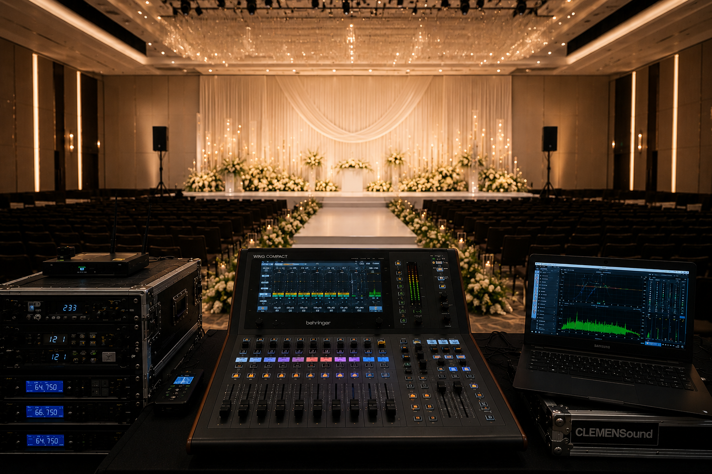

설치 Installation & 운영 Operation
“중요한 행사, 적절한 예산에 맞게 음향 사고 없이 완벽하게 마칠 수 있을까?”
“행사 후에 기존 장비들의 세팅이 틀어지면 어쩌지?”
많은 고객님들이 행사 전후 가장 불안해하시는 문제를 클레멘사운드가 명쾌하게 해결합니다.
행사 맞춤형 올라운드 사운드 디자인
차분한 기념식부터 에너지가 필요한 공연까지, 행사 성격과 공간 특성에 맞춰 편안하고 몰입감 있는 톤을 잡아드립니다.
거품 없는 정직한 예산 맞춤 세팅
한정된 예산 안에서 꼭 필요한 장비만 구성합니다. 불필요하게 스펙을 부풀려 비싼 장비를 요구하지 않습니다.
하울링 및 음향 사고 제로 지향
중요한 순간의 하울링이나 끊김에 대한 불안감을 줄입니다. 사전 답사 및 현장 모니터링으로 안정적인 행사를 준비합니다.
타임라인 엄수 및 신속한 철수
약속 시간보다 항상 먼저 도착하여 완벽한 사전 테스트와 리허설을 마치고, 종료 후 정해진 대관 시간 내에 깔끔하게 철수합니다.
자체 장비로만 공간 설계
종교시설이나 고정 매장에서 가장 민감해하시는 기존 장비의 소중한 세팅을 건드리지 않아 행사 종료 후에도 원래 상태 그대로 안심하고 사용하실 수 있습니다.
